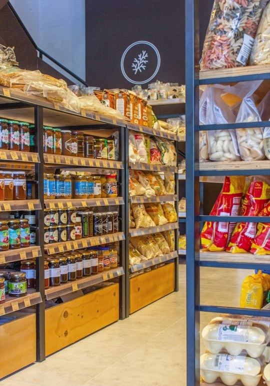
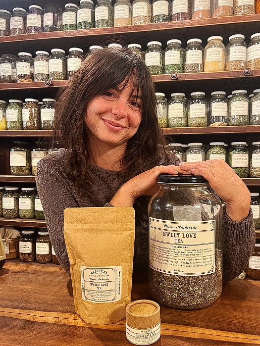

Nosotros: tu dietética de barrio


Te acompañanmos en tu crecimiento y metas
Hace más de una década, Dietética Ballester abrió sus puertas con la visión de ser más que una simple tienda de productos naturales; aspirábamos a convertirnos en un faro de salud y bienestar arraigado en nuestra comunidad. A lo largo de estos más de diez años, hemos cultivado una presencia sólida y confiable, brindando opciones saludables a aquellos que buscan mejorar su calidad de vida. En el núcleo de nuestra filosofía empresarial se encuentra un compromiso inquebrantable con la calidad. Nos enorgullece ofrecer a nuestros clientes una amplia gama de productos cuidadosamente seleccionados, garantizando que cada artículo en nuestras estanterías cumpla con los estándares más exigentes. Desde alimentos orgánicos hasta suplementos nutricionales, cada producto en Dietética Ballester es elegido con el objetivo de promover la salud y el bienestar de quienes nos eligen.
La trayectoria de Dietética Ballester no solo se mide en la calidad de nuestros productos, sino también en el respaldo de una comunidad que ha confiado en nosotros a lo largo del tiempo. Nuestra dedicación a brindar un servicio personalizado se refleja en nuestro equipo de expertos en nutrición, cuya experiencia acumulada durante más de una década se traduce en un asesoramiento sólido.
 